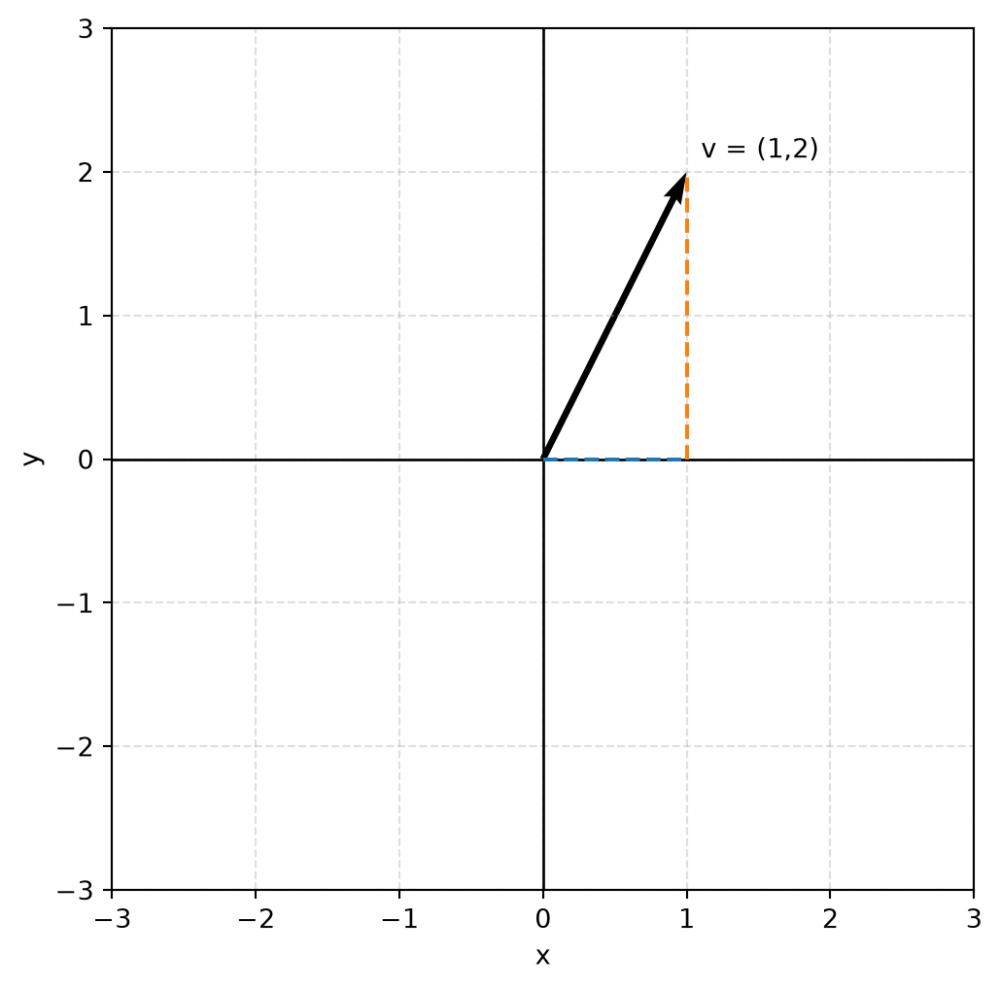
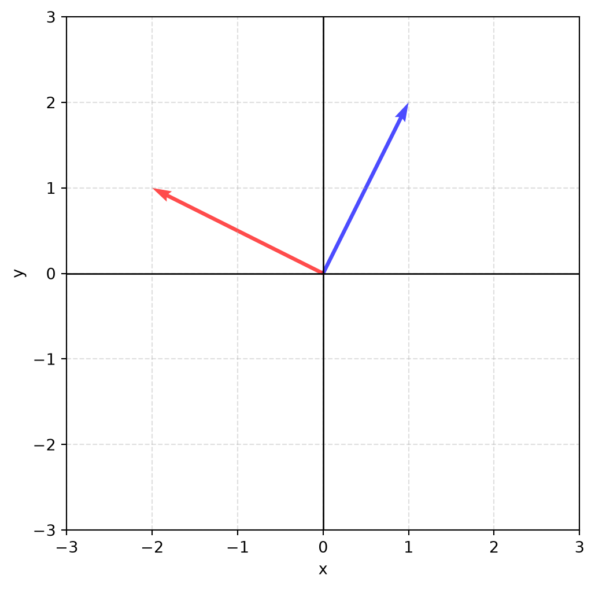
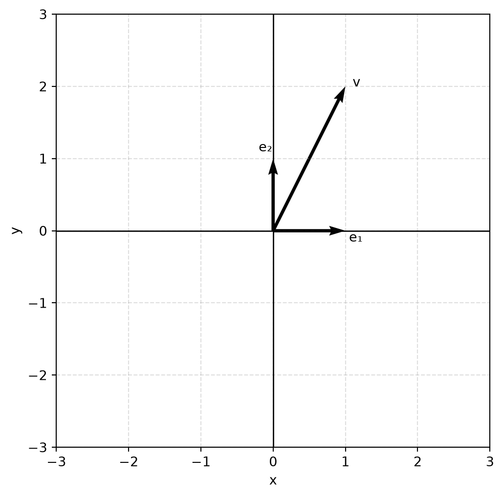

import numpy as np
A = np.array([
[1, 2, 3],
[4, 5, 6]
])
print(A)[[1 2 3]
[4 5 6]]So far, we have stored one list of numbers:
But what if we have several lists?
Now our data naturally forms a table.
| Alice | 82 | 91 | 77 | 95 |
| Bob | 74 | 83 | 89 | 88 |
| Carol | 90 | 97 | 92 | 99 |
A NumPy matrix is a way to store this table efficiently and let us perform mathematical operations on its contents.
import numpy as np
A = np.array([
[1, 2, 3],
[4, 5, 6]
])
print(A)[[1 2 3]
[4 5 6]]Note that every inner list becomes one row.
An important property of matrices is its dimensions, which are the number of rows and the number of columns. Knowing the dimensions of your matrices is necessary to see if certain operations on them are defined at all.
Matrix multiplication is unlike scalar multiplication which is commutative (order does not matter). Multiplication of two matrices is defined only if both have a relation between their dimensions. Specifically, the first matrix must have the same number of columns as the second matrix has rows.
In NumPy we can use the shape attribute to find the dimensions of a matrix.
A.shape here returns (2,3)
A = np.array([
[1, 2, 3],
[4, 5, 6]
])
print(A.shape)(2, 3)These conventions are the same as in linear algebra.
Rows run horizontally
Columns run vertically
A 2\times 3 matrix is understood to have 2 rows and 3 columns.
In our matrix A, if we use standard mathematical conventions the element 5 is located at (2,2) or equivalent A_{2,2} .
But with NumPy, we are in Python and indexing is based off of zero. The element 5 is located at (1,1).
A = np.array([
[1, 2, 3],
[4, 5, 6]
])
try:
print(A[2,2])
except Exception as e:
print(e)index 2 is out of bounds for axis 0 with size 2print(A[1,1])5Be careful with off-by-one errors, it is a common mistake.
Here is a table of A converted to Python’s indexing:
| Row | Column | Value |
|---|---|---|
| 0 | 0 | 1 |
| 0 | 1 | 2 |
| 0 | 2 | 3 |
| 1 | 0 | 4 |
| 1 | 1 | 5 |
| 1 | 2 | 6 |
A matrix can be viewed as a collection of column vectors. This is a good idea to keep in mind for many future operations on matrices.
We can select a row in the matrix by using just the first digit of the shape tuple.
A[0] selects the first row[1 2 3]print(A[0])[1 2 3]We can select a column in the matrix by using the colon as the first digit of the shape tuple and specifying the column number.
A[:,0] selects the first column[1 4]: means “all rows”
A[:,0] is all rows, column 0print(A[:,0])[1 4]Adding a scalar value to a matrix is defined by adding the scalar value to each element of the matrix.
print(f'A = {A}\n')
print(f'A+2 = {A+2}')A = [[1 2 3]
[4 5 6]]
A+2 = [[3 4 5]
[6 7 8]]Multiplying a matrix by a scalar value is defined by multiplying the scalar value with each element of the matrix.
print(f'A = {A}\n')
print(f'2A = {2*A}')A = [[1 2 3]
[4 5 6]]
2A = [[ 2 4 6]
[ 8 10 12]]The transpose operation on a matrix turns all rows to columns and all columns to rows.
In NumPy, we use the syntax A.T to take the transpose of matrix A.
print(f'A = {A}\n')
print(f'A.T = {A.T}')A = [[1 2 3]
[4 5 6]]
A.T = [[1 4]
[2 5]
[3 6]]Matrix addition is defined similarly to vector addition where each paired element is added together. Note that we need a pairing, and so the matrices must be of identical dimensions.
print(f'A = {A}\n')
print(f'A + A = {A+A}')A = [[1 2 3]
[4 5 6]]
A + A = [[ 2 4 6]
[ 8 10 12]]When it comes to “multiplication” of matrices, we need to define what multiplication means. Without prior knowledge, most people would define matrix multiplication similarly to scalar multiplication. That is, element-wise multiplication.
This kind of multiplication is the Hadamard product which we have seen with vectors. And this is not generally what people mean when they say matrix multiplication.
In NumPy, the Hadamard product is computed using the asterisk.
A = np.array([
[1, 2, 3],
[4, 5, 6]
])
print(A * A)[[ 1 4 9]
[16 25 36]]Let a matrix A be defined by
A = \begin{bmatrix} 1 & 3 \\ 2 & 1 \end{bmatrix}
Let a vector x be defined by
x = \begin{bmatrix} 2 \\ 5 \end{bmatrix}
Then we have
Ax = 2 \begin{bmatrix} 1 \\ 2 \end{bmatrix} + 5 \begin{bmatrix} 3 \\ 1 \end{bmatrix}
What we have here is just an extension of scalar multiplication and vector addition. We can say that the matrix A is just storing column vectors and that the vector x tells us how much of each column to combine.
A = np.array([
[1,3],
[2,1]
])
x = np.array([2,5])
print(A @ x)
print(2*A[:,0] + 5*A[:,1])[17 9]
[17 9]Why not define multiplication some other way? Matrix multiplication was not invented to multiply tables of numbers. It was invented as a compact way to describe transformations of vectors. The chosen definition turns matrices into machines (or rules) that transform vectors.
Suppose an object has position (x,y) and you want to stretch the x-coordinate by 2 while leaving y unchanged.
What you want is a transformation that performs the following
\begin{bmatrix} x \\ y \end{bmatrix} \rightarrow \begin{bmatrix} 2x \\ y \end{bmatrix}
We can go and write one operation that works for any values inside the vector. All we need to do is put the coefficients into a matrix.
\begin{bmatrix} 2 & 0 \\ 0 & 1 \end{bmatrix} \begin{bmatrix} x \\ y \end{bmatrix} = \begin{bmatrix} 2x \\ y \end{bmatrix}
Using NumPy, we can verify this for chosen values of x and y .
vec = np.array([1,2]) #x = 1 and y = 2, so our scaled vector should be (2,2) if successful
mat = np.array([[2,0],
[0,1]])
print(mat@vec)[2 2]Remember that a matrix a rule that we define whose purpose is to transform vectors.
We will reuse the matrix A defined earlier:
A = \begin{bmatrix} 1 & 3 \\ 2 & 1 \end{bmatrix}
And we will define vector x to be
x = \begin{bmatrix} a \\ b \end{bmatrix}
Let us rewrite A using the substitutions
c_1 = \begin{bmatrix} 1 \\ 2 \end{bmatrix} ,\; c_2 = \begin{bmatrix} 3 \\ 1 \end{bmatrix}
So we have
A = \begin{bmatrix} c_1 & c_2 \end{bmatrix}
Then
Ax = ac_1 + bc_2
Note that the vector x tells us how much of each column to use. This is the meaning of matrix-vector multiplication, the matrix stores vectors and the input vector provides the weights.
Matrix columns can be viewed as directions or features, the entries of our vector is how much of each feature to use, and the output is the resulting combination.
This is very useful because many problems are linear combinations or can at least be approximated by linear combinations.
If one matrix transforms vectors, what should happen when we apply two transformations in sequence?
Suppose that the matrix B rotates a vector x , then matrix A stretches it. We would like to have a single matrix that performs both operations at once, that is
A(Bx) = (AB)x
This requirement determines how matrix multiplication must work. Matrix multiplication is defined so that composing transformations works as expected.
If matrix C has columns C = \begin{bmatrix} c_1 & c_2 & c_3 \end{bmatrix} then multiplying C by matrix D gives us DC =\begin{bmatrix}Dc_1 & Dc_2 & Dc_3 \end{bmatrix}.
We can see that D is applied to every column of C. Matrix-matrix multiplication ultimately means we transform every column.
Computing the output of matrix multiplication is usually taught as the “row-column” approach.
For matrix
A = \begin{bmatrix} a_{11} & a_{12} \\ a_{21} & a_{22} \end{bmatrix}
and vector
x = \begin{bmatrix} x_1 \\ x_2 \end{bmatrix}
we have
Ax = x_1 \begin{bmatrix} a_{11} \\ a_{21} \end{bmatrix} + x_2 \begin{bmatrix} a_{12} \\ a_{22} \end{bmatrix} = \begin{bmatrix} x_1a_{11} + x_2a_{12} \\ x_1a_{21} + x_2a_{22} \end{bmatrix}
Note that we are using what amounts to the dot product here.
For matrix
B = \begin{bmatrix} 1 & 2 \\ 3 & 4 \end{bmatrix}
and
C = \begin{bmatrix} 5 & 6 \\ 7 & 8 \end{bmatrix}
BC = \begin{bmatrix} \begin{bmatrix} 1 & 2 \end{bmatrix} \begin{bmatrix} 5 \\ 7 \end{bmatrix} & \begin{bmatrix} 1 & 2 \end{bmatrix} \begin{bmatrix} 6 \\ 8 \end{bmatrix} \\ \begin{bmatrix} 3 & 4 \end{bmatrix} \begin{bmatrix} 5 \\ 7 \end{bmatrix} & \begin{bmatrix} 3 & 4 \end{bmatrix} \begin{bmatrix} 6 \\ 8 \end{bmatrix} \end{bmatrix} = \begin{bmatrix} 1 \times 5 + 2 \times 7 & 3 \times 5 + 4 \times 7 \\ 1 \times 6 + 2 \times 8 & 3 \times 6 + 4 \times 8 \end{bmatrix} = \begin{bmatrix} 19 & 22 \\ 43 & 50 \end{bmatrix}
Confirm that for matrices B and C above that BC \neq CB.
Confirm by hand that the result of the matrix vector product in the Python example in the matrix-vector product subsection is in fact just the x value scaled by 2.
Matrix multiplication is not defined for any two arbitrary sized matrices.
An n \times p matrix takes a p-dimensional vector and produces an n-dimensional vector. Now, if we have an m \times n matix, this takes an n-dimensional vector and produces an m-dimensional vector.
If we have two transformations, the output dimension of the first transformation must equal the input dimension of the second transformation. We need to connect compatible transformations to have matrix multiplication defined. Looking at our matrices we have the m \times n matrix applied to the n \times p matrix. Writing this as (m \times n)(n \times p) we can see that the “inner” dimensions are equal here, and this is the requirement when it comes to matrix multiplication. The size of the output will be the “outer dimension” (m \times p).
A rotation matrix turns every vector by the same angle. To keep things simple, we will restrict ourselves to 2 dimensions.
The following matrix can rotate every point in our 2D space:
\begin{bmatrix} \cos(\theta) & -sin(\theta) \\ \sin(\theta) & \cos(\theta) \end{bmatrix} \begin{bmatrix} x \\ y \end{bmatrix}
The simplicity of representing this transformation is one reason why graphics libraries use matrices everywhere.
import matplotlib.pyplot as plt
def rotate(theta,vector):
rotation_matrix = np.array([
[np.cos(theta), -1*np.sin(theta)],
[np.sin(theta), np.cos(theta)]
])
return rotation_matrix @ vector
vector = [1,2]
theta = np.pi / 2
print(rotate(theta,vector))[-2. 1.]We can visualize the initial vector and its transformed version to confirm that our rotation matrix is working correctly.
import matplotlib.pyplot as plt
def setup_axes(ax, lim=3):
"""Create a consistent coordinate system."""
ax.set_xlim(-lim, lim)
ax.set_ylim(-lim, lim)
ax.set_aspect('equal')
# Draw coordinate axes
ax.axhline(0, color='black', linewidth=1)
ax.axvline(0, color='black', linewidth=1)
ax.grid(True, linestyle='--', alpha=0.4)
ax.set_xlabel("x")
ax.set_ylabel("y")
v = np.array([1,2])
fig, ax = plt.subplots(figsize=(6,6))
setup_axes(ax)
# Vector
ax.quiver(0,0,v[0],v[1],
angles='xy',
scale_units='xy',
scale=1)
# Components
ax.plot([0,v[0]],[0,0],'--')
ax.plot([v[0],v[0]],[0,v[1]],'--')
ax.text(v[0]+0.1,v[1]+0.1,"v = (1,2)")
plt.show()
import matplotlib.pyplot as plt
fig, ax = plt.subplots(figsize=(6,6))
setup_axes(ax)
v = np.array([1,2])
angles = np.linspace(0,np.pi/2,2)
for theta in angles:
R = np.array([
[np.cos(theta),-np.sin(theta)],
[np.sin(theta), np.cos(theta)]
])
vr = R @ v
if theta == 0:
color = 'blue'
else:
color = 'red'
ax.quiver(
0,0,
vr[0],vr[1],
angles='xy',
scale_units='xy',
scale=1,
alpha=0.7,
color=color
)
plt.show()
We know we can decompose vectors into a representation based off of their constituent directions. For example, in 2D space we can use the x and y axes to fully describe any vector that lives in that space, that is, every vector in our space can be built from a linear combination of these directions. We then talk of the x and y components of the vector.
These building-block vectors are called basis vectors.
import matplotlib.pyplot as plt
fig, ax = plt.subplots(figsize=(6,6))
setup_axes(ax)
e1 = np.array([1,0])
e2 = np.array([0,1])
ax.quiver(0,0,*e1,
angles='xy',
scale_units='xy',
scale=1)
ax.quiver(0,0,*e2,
angles='xy',
scale_units='xy',
scale=1)
v = np.array([1,2])
ax.quiver(0,0,*v,
angles='xy',
scale_units='xy',
scale=1)
ax.text(1.05,-0.15,"e₁")
ax.text(-0.2,1.1,"e₂")
ax.text(v[0]+0.1,v[1],"v")
plt.show()
The vector v in the plot can be viewed as 1e_1 + 2e_2.
Suppose we use our rotation matrix on the vector [1,0] where we rotate by \frac{\pi}{2}.
We would expect our output to be exactly [0,1] but sometimes we may see a slightly different answer.
vector = np.array([1,0])
theta = np.pi/2
R = np.array([
[np.cos(theta), -np.sin(theta)],
[np.sin(theta), np.cos(theta)]
])
print(R @ vector)[6.123234e-17 1.000000e+00]Because computers cannot store most real numbers exactly, they need to approximate them. This leads to small errors in the result. But, if we know that this is possible, we can work to control it.
For this example, we can clean up our answer using the round() method in NumPy.
np.round() takes in a NumPy array and an integer that controls the number of digits (the precision).print(np.round(R @ vector, 10))[0. 1.]Here, we set the precision to 10 digits, which are all zeroes and so our rounded result is zero.